Lagrangian Approximations for the Stochastic Reachability of a Target Tube
This example will demonstrate the use of SReachTools for Lagrangian-based verification of stochastic continuous-state discrete-time linear time-invariant (LTI) systems. This example script is part of the SReachTools toolbox, which is licensed under GPL v3 or (at your option) any later version. A copy of this license is given in https://sreachtools.github.io/license/.
Contents
- Lagrangian Methods
- Problem Definition
- Viability problem as a stochastic reachability of a target tube problem
- Lagrangian underapproximation for stochastic reachability of a target tube
- Underapprox. type 1: Bound_set_method - Ellipsoid | Compute_style - VFmethod
- Underapprox. type 2: Bound_set_method - Ellipsoid | Compute_style - Support
- Underapprox. type 3: Bound_set_method - Polytope | Compute_style - VFmethod
- Underapprox. type 3: Bound_set_method - Polytope | Compute_style - Support
- Lagrangian overapproximation for stochastic reachability of a target tube
- Overapprox. type 1: Bound_set_method - Ellipsoid | Compute_style - VFmethod
- Overapprox. type 2: Bound_set_method - Ellipsoid | Compute_style - Support
- Overapprox. type 3: Bound_set_method - Polytope | Compute_style - VFmethod
- Overapprox. type 4: Bound_set_method - Polytope | Compute_style - Support
- Dynamic programming solution
- Simulation times: Lagrangian approximation beats dynamic programming
- Plotting all the sets together
Lagrangian Methods
Lagrangian methods perform computations with sets using operations like unions, intersection, Minkowski addition/differences, etc. This computation using set operations can be used to approximate (either over or under) the stochastic reachability of a target tube problem. We will demonstrate that this approach, while being be approximative, can outperform the current state-of-the-art dynamic programming solution in terms of computation time.
Advantages:
- No gridding, which partially evades the curse of dimensionality
- Provides verification for closed-loop feedback strategies
- Synthesis of a closed-loop feedback strategy
Disadvantages:
- Using Polyhedral representation, must solve the vertex-facet enumeration problem, limiting computations to ~4 dimensional systems
The theory for this approach can be found in
- J. D. Gleason, A. P. Vinod, M. M. K. Oishi, "Underapproximation of Reach-Avoid Sets for Discrete-Time Stochastic Systems via Lagrangian Methods," in Proceedings of the IEEE Conference on Decision and Control, 2017.
Further, we explore multiple implementations of the Lagrangian-based verification, where the vertex-facet enumeration is mitigated either via recursion-free support method in overapproximation or vertex-complexity preserving support vector method in underapproximation.
All computations were performed using MATLAB on an Ubuntu OS running on a laptop with Intel i7 CPU with 2.1GHz clock rate and 8 GB RAM. For sake of clarity, all commands were asked to be verbose (via `SReachSetOptions`). In practice, this can be turned off.
% Prescript running: Initializing srtinit, if it already hasn't been initialized close all;clearvars;srtinit;
Problem Definition
In this example we will look at the viability problem for a double integrator. The system dynamics are:
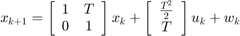
where  is the state, 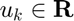 is the input, and 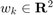 is the disturbance. The following code defines this system with 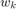 as an i.i.d. Gaussian disturbance with mean 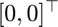 and variance 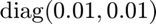.
is the state, 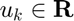 is the input, and 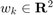 is the disturbance. The following code defines this system with 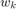 as an i.i.d. Gaussian disturbance with mean 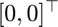 and variance 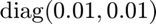.
example parameters
T = 0.25; % define the system sys = getChainOfIntegLtiSystem(2, ... T, ... Polyhedron('lb', -0.1, 'ub', 0.1), ... RandomVector('Gaussian', zeros(2,1), 0.001*eye(2)));
Viability problem as a stochastic reachability of a target tube problem
We examine the viability problem in which we are interested in staying in a set of safe states. In this example the safe set is 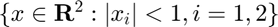. The stochastic reachability of a target tube problem posed as a viability problem by constructing a target tube in which all sets in the tube are the safe set.
time_horizon = 5; % safe set definition safe_set = Polyhedron('lb', [-1, -1], 'ub', [1, 1]); % target tube definition target_tube = Tube('viability', safe_set, time_horizon); % probability threshold desired beta = 0.8; % Plotting of target tube figure(1) clf hold on for time_indx = 0:time_horizon target_tube_at_time_indx = Polyhedron('H',... [target_tube(time_indx+1).A, ... zeros(size(target_tube(time_indx+1).A,1),1), ... target_tube(time_indx+1).b], 'He',[0 0 1 time_indx]); plot(target_tube_at_time_indx, 'alpha',0.25); end axis([-1 1 -1 1 0 time_horizon]); box on; grid on; xlabel('x'); ylabel('y'); zlabel('time'); title('Target tube'); axis equal;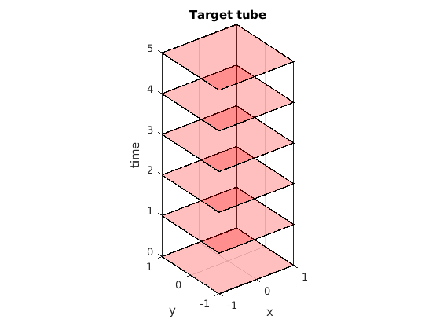
Lagrangian underapproximation for stochastic reachability of a target tube
SReachSet can compute Lagrangian underapproximation via multiple approaches. It can approximate the disturbance set, against which the robust computation is done, as a polytope or an ellipsoid (as specified by bound_set_method). Further, it can either perform an exact (and time-consuming) vertex-facet enumeration or an underapproximative (and complexity-preserving) computation using support vectors (as specified by compute_style). The vertex-facet enumeration may be performed by CDD or LRS, two popular enumeration techinques. We use CDD by default, but it can be switched to LRS using vf_enum_method.
n_dim = sys.state_dim + sys.input_dim; % Require unit vectors to sample X x U
lagrange_under_time = zeros(4,1);
Underapprox. type 1: Bound_set_method - Ellipsoid | Compute_style - VFmethod
This is the best method in this case, since it leverages the fact that the distubance is Gaussian and for two-dimensional polytopes, vertex-facet enumeration is not significantly hard.
timerVal=tic; luOpts1 = SReachSetOptions('term', 'lag-under', 'bound_set_method', ... 'ellipsoid', 'verbose',1,'compute_style','vfmethod'); luOpts_time(1) = toc(timerVal); timerVal=tic; luSet(1) = SReachSet('term', 'lag-under', sys, beta, target_tube, luOpts1); lagrange_under_time(1) = toc(timerVal);
Computing Lagragian under approximation Time_horizon: 5 Computation for time step: 4 Computation for time step: 3 Computation for time step: 2 Computation for time step: 1 Computation for time step: 0
Underapprox. type 2: Bound_set_method - Ellipsoid | Compute_style - Support
Compared to type 1, this method will result in more conservative solution. The benefit of this approach becomes clear when we use it in high-dimensional systems where vertex-facet enumeration is hard. By the virtue of being recursion-free, this approach will scale better than type 1.
timerVal=tic; luOpts2 = SReachSetOptions('term', 'lag-under', 'bound_set_method', ... 'ellipsoid', 'system', sys, 'n_vertices', 2^n_dim*10+2*n_dim,... 'verbose',1,'compute_style','support'); luOpts_time(2) = toc(timerVal); timerVal=tic; luSet(2) = SReachSet('term', 'lag-under', sys, beta, target_tube, luOpts2); lagrange_under_time(2) = toc(timerVal);
Spreading 86 unit-length vectors in 3-dim space Analyzing 10 unit-length vectors in first quadrant 1. Setting up the CVX problem... 1 | 2 | 3 | 4 | 5 | 6 | 7 | 8 | 9 | 10 | Solving the CVX problem...done Status: Solved Sum of slack: 1.568e-09 (< 1.000e-08) Change in opt cost: 3.010e-01 (< 1.000e-05) 2. Setting up the CVX problem... 1 | 2 | 3 | 4 | 5 | 6 | 7 | 8 | 9 | 10 | Solving the CVX problem...done Status: Solved Sum of slack: 3.182e-10 (< 1.000e-08) Change in opt cost: 4.522e-02 (< 1.000e-05) 3. Setting up the CVX problem... 1 | 2 | 3 | 4 | 5 | 6 | 7 | 8 | 9 | 10 | Solving the CVX problem...done Status: Solved Sum of slack: 1.659e-11 (< 1.000e-08) Change in opt cost: 1.056e-02 (< 1.000e-05) 4. Setting up the CVX problem... 1 | 2 | 3 | 4 | 5 | 6 | 7 | 8 | 9 | 10 | Solving the CVX problem...done Status: Solved Sum of slack: 3.766e-11 (< 1.000e-08) Change in opt cost: 5.915e-03 (< 1.000e-05) 5. Setting up the CVX problem... 1 | 2 | 3 | 4 | 5 | 6 | 7 | 8 | 9 | 10 | Solving the CVX problem...done Status: Solved Sum of slack: 3.092e-10 (< 1.000e-08) Change in opt cost: 9.338e-04 (< 1.000e-05) 6. Setting up the CVX problem... 1 | 2 | 3 | 4 | 5 | 6 | 7 | 8 | 9 | 10 | Solving the CVX problem...done Status: Solved Sum of slack: 1.669e-11 (< 1.000e-08) Change in opt cost: 3.288e-04 (< 1.000e-05) 7. Setting up the CVX problem... 1 | 2 | 3 | 4 | 5 | 6 | 7 | 8 | 9 | 10 | Solving the CVX problem...done Status: Solved Sum of slack: 5.145e-11 (< 1.000e-08) Change in opt cost: 9.588e-08 (< 1.000e-05) Completed spreading the vectors! Computing Lagragian under approximation Time_horizon: 5 Computation for time step: 4 Computation for time step: 3 Computation for time step: 2 Computation for time step: 1 Computation for time step: 0
Underapprox. type 3: Bound_set_method - Polytope | Compute_style - VFmethod
Compared to type 1, this method will result in more conservative solution since the bounded disturbance set is larger in volume. This approach is best used when the disturbance is non-Gaussian. This approach is best used when the disturbance is non-Gaussian.
luOpts3 = SReachSetOptions('term', 'lag-under', 'bound_set_method', ... 'polytope', 'verbose', 1, 'compute_style','vfmethod','template_polytope',... Polyhedron('lb',-ones(sys.dist.dim,1),'ub',ones(sys.dist.dim,1))); luOpts_time(3) = toc(timerVal); timerVal=tic; luSet(3) = SReachSet('term', 'lag-under', sys, beta, target_tube, luOpts3); lagrange_under_time(3) = toc(timerVal);
Computing Lagragian under approximation Computing the bounded disturbance set Time_horizon: 5 Computation for time step: 4 Computation for time step: 3 Computation for time step: 2 Computation for time step: 1 Computation for time step: 0
Underapprox. type 3: Bound_set_method - Polytope | Compute_style - Support
Compared to type 1, this method will result in more conservative solution since the bounded disturbance set is larger in volume. Compared to type 3, this set will be more conservative since an underapproximative vertex-facet enumeration is performed.
luOpts4 = SReachSetOptions('term', 'lag-under', 'bound_set_method', ... 'polytope', 'system', sys, 'n_vertices', 2^n_dim*10+2*n_dim,... 'verbose', 1, 'compute_style','support', 'template_polytope',... Polyhedron('lb',-ones(sys.dist.dim,1),'ub',ones(sys.dist.dim,1))); luOpts_time(4) = toc(timerVal); timerVal=tic; luSet(4) = SReachSet('term', 'lag-under', sys, beta, target_tube, luOpts4); lagrange_under_time(4) = toc(timerVal);
Spreading 86 unit-length vectors in 3-dim space Analyzing 10 unit-length vectors in first quadrant 1. Setting up the CVX problem... 1 | 2 | 3 | 4 | 5 | 6 | 7 | 8 | 9 | 10 | Solving the CVX problem...done Status: Solved Sum of slack: 2.621e-10 (< 1.000e-08) Change in opt cost: 2.621e-01 (< 1.000e-05) 2. Setting up the CVX problem... 1 | 2 | 3 | 4 | 5 | 6 | 7 | 8 | 9 | 10 | Solving the CVX problem...done Status: Solved Sum of slack: 7.852e-10 (< 1.000e-08) Change in opt cost: 7.511e-02 (< 1.000e-05) 3. Setting up the CVX problem... 1 | 2 | 3 | 4 | 5 | 6 | 7 | 8 | 9 | 10 | Solving the CVX problem...done Status: Solved Sum of slack: 3.660e-10 (< 1.000e-08) Change in opt cost: 1.453e-02 (< 1.000e-05) 4. Setting up the CVX problem... 1 | 2 | 3 | 4 | 5 | 6 | 7 | 8 | 9 | 10 | Solving the CVX problem...done Status: Solved Sum of slack: 1.079e-10 (< 1.000e-08) Change in opt cost: 8.359e-03 (< 1.000e-05) 5. Setting up the CVX problem... 1 | 2 | 3 | 4 | 5 | 6 | 7 | 8 | 9 | 10 | Solving the CVX problem...done Status: Solved Sum of slack: 3.053e-11 (< 1.000e-08) Change in opt cost: 4.323e-04 (< 1.000e-05) 6. Setting up the CVX problem... 1 | 2 | 3 | 4 | 5 | 6 | 7 | 8 | 9 | 10 | Solving the CVX problem...done Status: Solved Sum of slack: 4.489e-11 (< 1.000e-08) Change in opt cost: 7.156e-07 (< 1.000e-05) Completed spreading the vectors! Computing Lagragian under approximation Computing the bounded disturbance set Time_horizon: 5 Computation for time step: 4 Computation for time step: 3 Computation for time step: 2 Computation for time step: 1 Computation for time step: 0
Lagrangian overapproximation for stochastic reachability of a target tube
SReachSet can compute Lagrangian overapproximation via multiple approaches. It can approximate the disturbance set which augments the input space as a polytope or an ellipsoid (as specified by bound_set_method). Further, it can perform a recursive computation using vertex-facet enumeration or a recursion-free computation using support functions (as specified by compute_style). The vertex-facet enumeration may be performed by CDD or LRS, two popular enumeration techinques. We use CDD by default, but it can be switched to LRS using vf_enum_method.
n_dim_over = sys.state_dim; % Require unit vectors to sample X
lagrange_over_time = zeros(4,1);
Overapprox. type 1: Bound_set_method - Ellipsoid | Compute_style - VFmethod
This is the best method in this case, since it leverages the fact that the distubance is Gaussian and for two-dimensional polytopes, vertex-facet enumeration is not significantly hard.
timerVal=tic; loOpts1 = SReachSetOptions('term', 'lag-over', 'bound_set_method', ... 'ellipsoid', 'verbose', 1, 'compute_style','vfmethod'); loOpts_time(1) = toc(timerVal); timerVal=tic; loSet(1) = SReachSet('term', 'lag-over', sys, beta, target_tube, loOpts1); lagrange_over_time(1) = toc(timerVal);
Computing Lagragian over approximation Time_horizon: 5 Computation for time step: 4 Computation for time step: 3 Computation for time step: 2 Computation for time step: 1 Computation for time step: 0
Overapprox. type 2: Bound_set_method - Ellipsoid | Compute_style - Support
Compared to type 1, this method will provide an overapproximative solution but can potentially be faster since it is recursion-free.
timerVal=tic; loOpts2 = SReachSetOptions('term', 'lag-over', 'bound_set_method', ... 'ellipsoid', 'verbose', 1, 'compute_style','support', 'system', sys,... 'n_vertices', 2^n_dim_over * 7+2*n_dim_over); loOpts_time(2) = toc(timerVal); timerVal=tic; loSet(2) = SReachSet('term', 'lag-over', sys, beta, target_tube, loOpts2); lagrange_over_time(2) = toc(timerVal);
Spreading 32 unit-length vectors in 2-dim space Analyzing 7 unit-length vectors in first quadrant 1. Setting up the CVX problem... 1 | 2 | 3 | 4 | 5 | 6 | 7 | Solving the CVX problem...done Status: Solved Sum of slack: 2.188e-02 (< 1.000e-08) Change in opt cost: 1.561e-01 (< 1.000e-05) 2. Setting up the CVX problem... 1 | 2 | 3 | 4 | 5 | 6 | 7 | Solving the CVX problem...done Status: Solved Sum of slack: 5.575e-11 (< 1.000e-08) Change in opt cost: 3.901e-02 (< 1.000e-05) 3. Setting up the CVX problem... 1 | 2 | 3 | 4 | 5 | 6 | 7 | Solving the CVX problem...done Status: Solved Sum of slack: 3.749e-10 (< 1.000e-08) Change in opt cost: 3.079e-03 (< 1.000e-05) 4. Setting up the CVX problem... 1 | 2 | 3 | 4 | 5 | 6 | 7 | Solving the CVX problem...done Status: Solved Sum of slack: 1.058e-11 (< 1.000e-08) Change in opt cost: 4.595e-05 (< 1.000e-05) 5. Setting up the CVX problem... 1 | 2 | 3 | 4 | 5 | 6 | 7 | Solving the CVX problem...done Status: Solved Sum of slack: 1.848e-11 (< 1.000e-08) Change in opt cost: 8.840e-09 (< 1.000e-05) Completed spreading the vectors! Computing Lagragian over approximation Evaluating support function: 32/ 32
Overapprox. type 3: Bound_set_method - Polytope | Compute_style - VFmethod
Compared to type 1, this method will result in more conservative solution since the bounded disturbance set is larger in volume.
timerVal=tic; loOpts3 = SReachSetOptions('term', 'lag-over', 'bound_set_method', ... 'polytope', 'verbose', 1, 'template_polytope',... Polyhedron('lb',-ones(sys.dist.dim,1),'ub',ones(sys.dist.dim,1)),... 'compute_style','vfmethod'); loOpts_time(3) = toc(timerVal); timerVal=tic; loSet(3) = SReachSet('term', 'lag-over', sys, beta, target_tube, loOpts3); lagrange_over_time(3) = toc(timerVal);
Computing Lagragian over approximation Computing the bounded disturbance set Time_horizon: 5 Computation for time step: 4 Computation for time step: 3 Computation for time step: 2 Computation for time step: 1 Computation for time step: 0
Overapprox. type 4: Bound_set_method - Polytope | Compute_style - Support
Compared to type 1, this method will result in more conservative solution since the bounded disturbance set is larger in volume. Compared to type 3, this method will provide an overapproximative solution but can potentially be faster since it is recursion-free.
loOpts4 = SReachSetOptions('term', 'lag-over', 'bound_set_method', ... 'polytope', 'verbose', 1, 'template_polytope',... Polyhedron('lb',-ones(sys.dist.dim,1),'ub',ones(sys.dist.dim,1)),... 'compute_style','support', 'system', sys,... 'n_vertices', 2^n_dim_over* 7 +2*n_dim_over); loOpts_time(4) = toc(timerVal); timerVal=tic; loSet(4) = SReachSet('term', 'lag-over', sys, beta, target_tube, loOpts4); lagrange_over_time(4) = toc(timerVal);
Spreading 32 unit-length vectors in 2-dim space Analyzing 7 unit-length vectors in first quadrant 1. Setting up the CVX problem... 1 | 2 | 3 | 4 | 5 | 6 | 7 | Solving the CVX problem...done Status: Solved Sum of slack: 2.242e-02 (< 1.000e-08) Change in opt cost: 1.447e-01 (< 1.000e-05) 2. Setting up the CVX problem... 1 | 2 | 3 | 4 | 5 | 6 | 7 | Solving the CVX problem...done Status: Solved Sum of slack: 4.952e-09 (< 1.000e-08) Change in opt cost: 4.312e-02 (< 1.000e-05) 3. Setting up the CVX problem... 1 | 2 | 3 | 4 | 5 | 6 | 7 | Solving the CVX problem...done Status: Solved Sum of slack: 1.044e-10 (< 1.000e-08) Change in opt cost: 9.922e-03 (< 1.000e-05) 4. Setting up the CVX problem... 1 | 2 | 3 | 4 | 5 | 6 | 7 | Solving the CVX problem...done Status: Solved Sum of slack: 6.872e-10 (< 1.000e-08) Change in opt cost: 5.405e-04 (< 1.000e-05) 5. Setting up the CVX problem... 1 | 2 | 3 | 4 | 5 | 6 | 7 | Solving the CVX problem...done Status: Solved Sum of slack: 4.490e-11 (< 1.000e-08) Change in opt cost: 1.555e-06 (< 1.000e-05) Completed spreading the vectors! Computing Lagragian over approximation Computing the bounded disturbance set Evaluating support function: 32/ 32
Dynamic programming solution
We compare the results with dynamic programming to see how the approximations appear and how they compare in simulation times.
dyn_prog_xinc = 0.025; dyn_prog_uinc = 0.1; tic; [prob_x, cell_of_xvec] = SReachDynProg('term', sys, dyn_prog_xinc, ... dyn_prog_uinc, target_tube); dynprog_time = toc();
Compute the beta-stochastic level set
dyn_soln_lvl_set=getDynProgLevelSets2D(cell_of_xvec, prob_x, beta, target_tube);
Simulation times: Lagrangian approximation beats dynamic programming
The simulation times for Lagrangian computation is much faster (in most cases) than dynamic programming. Further, dynamic programming solution provides no approximation guarantees while Lagrangian approach provides grid-free approximation guarantee.
fprintf('Simulation times [seconds]:\n'); fprintf(' Lagrangian:\n'); % fprintf(' Overapproximation : %.3f (online: %1.3f | offline: %1.3f)\n',... % lagrange_over_time + loOpts_time, lagrange_over_time, loOpts_time); fprintf(' Overapproximation online | offline | Total\n'); fprintf('(Ellipsoid,VFmethod) %1.2e | %1.2e | %1.2f\n',... lagrange_over_time(1),loOpts_time(1),lagrange_over_time(1)+loOpts_time(1)); fprintf('(Ellipsoid, support) %1.2e | %1.2e | %1.2f\n',... lagrange_over_time(2),loOpts_time(2),lagrange_over_time(2)+loOpts_time(2)); fprintf('(Polytope ,VFmethod) %1.2e | %1.2e | %1.2f\n',... lagrange_over_time(3),loOpts_time(3),lagrange_over_time(3)+loOpts_time(3)); fprintf('(Polytope , support) %1.2e | %1.2e | %1.2f\n',... lagrange_over_time(4),loOpts_time(4),lagrange_over_time(4)+loOpts_time(4)); fprintf(' Underapproximation online | offline | Total\n'); fprintf('(Ellipsoid,VFmethod) %1.2e | %1.2e | %1.2f\n',... lagrange_under_time(1),luOpts_time(1),lagrange_under_time(1)+luOpts_time(1)); fprintf('(Ellipsoid, support) %1.2e | %1.2e | %1.2f\n',... lagrange_under_time(2),luOpts_time(2),lagrange_under_time(2)+luOpts_time(2)); fprintf('(Polytope ,VFmethod) %1.2e | %1.2e | %1.2f\n',... lagrange_under_time(3),luOpts_time(3),lagrange_under_time(3)+luOpts_time(3)); fprintf('(Polytope , support) %1.2e | %1.2e | %1.2f\n',... lagrange_under_time(4),luOpts_time(4),lagrange_under_time(4)+luOpts_time(4)); fprintf(' Dynamic programming: %.3f\n', dynprog_time);
Simulation times [seconds]: Lagrangian: Overapproximation online | offline | Total (Ellipsoid,VFmethod) 5.90e-01 | 2.41e-03 | 0.59 (Ellipsoid, support) 9.95e+00 | 8.97e+00 | 18.91 (Polytope ,VFmethod) 1.05e+00 | 8.62e-03 | 1.06 (Polytope , support) 7.15e+00 | 9.46e+00 | 16.62 Underapproximation online | offline | Total (Ellipsoid,VFmethod) 4.29e-01 | 3.63e-03 | 0.43 (Ellipsoid, support) 2.84e+00 | 2.52e+01 | 28.00 (Polytope ,VFmethod) 9.86e-01 | 2.92e+00 | 3.91 (Polytope , support) 3.39e+00 | 2.15e+01 | 24.85 Dynamic programming: 94.858
Plotting all the sets together
As expected, the over-approximation and the under-approximation obtained via Lagrangian approach bounds the dynamic programming solution from "inside" and "outside".
figure(2); clf plot(safe_set, 'color', 'k'); hold on; plot(loSet(2), 'color', 'y','alpha',1); plot(loSet(1), 'color', 'r','alpha',0.5); plot(dyn_soln_lvl_set,'color', 'b') plot(luSet(1), 'color', 'm','alpha',1); plot(luSet(2), 'color', 'g','alpha',0.75); hold off; xlabel('$x_1$', 'Interpreter', 'latex') ylabel('$x_2$', 'Interpreter', 'latex') leg = legend('Safe set',... 'Overapproximation (Ell, support)',... 'Overapproximation (Ell, VF)',... 'Dyn. prog. soln.',... 'Underapproximation (Ell, VF)',... 'Underapproximation (Ell, support)'); set(leg,'Location','EastOutside'); box on; axis equal; axis tight; figure(3); clf plot(safe_set, 'color', 'k'); hold on; plot(loSet(4), 'color', 'y','alpha',1); plot(loSet(3), 'color', 'r','alpha',0.5); plot(dyn_soln_lvl_set,'color', 'b') plot(luSet(3), 'color', 'm','alpha',1); plot(luSet(4), 'color', 'g','alpha',0.75); hold off; xlabel('$x_1$', 'Interpreter', 'latex') ylabel('$x_2$', 'Interpreter', 'latex') leg = legend('Safe set',... 'Overapproximation (Poly, support)',... 'Overapproximation (Poly, VF)',... 'Dyn. prog. soln.',... 'Underapproximation (Poly, VF)',... 'Underapproximation (Poly, support)'); set(leg,'Location','EastOutside'); box on; axis equal; axis tight;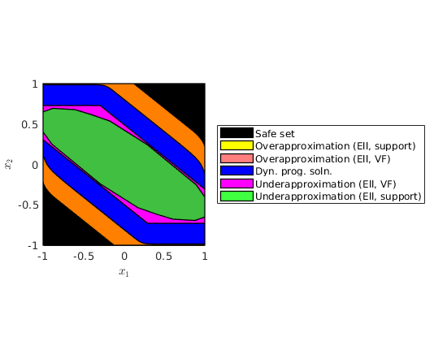 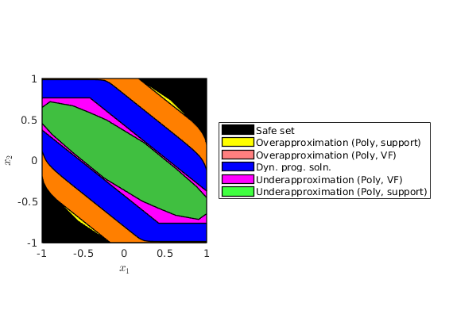